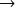
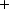
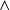

Exemple
# On gere le nom et la taille de la figure (x, y) en inch (1 inch vaut 2.54 cm)plt.figure('Trace ameliore', figsize=(8, 6))
# Ajout d'un titreplt.title(r"Courbe representative de $f : x \mapsto \frac{\sin(x)}{1 + x^2}$", \
verticalalignment = 'bottom')
# Legende pour l'axe des abscissesplt.xlabel(r"$x$")
# etiquettes pour les abscissesx_valeurs = [np.pi * k for k in range(9)]
x_etiquettes = [r'$0$', r'$\pi$', r'$2\cdot \pi$', r'$3\cdot \pi$', \
r'$4\cdot \pi$', r'$5\cdot \pi$', r'$6\cdot \pi$', \
r'$7\cdot \pi$', r'$8\cdot \pi$']
plt.xticks(x_valeurs, x_etiquettes)
# Legende pour l'axe des ordonneesplt.ylabel(r"$y = f(x)$", rotation = 'vertical')
# il est possible aussi bien sur d'indiquer des etiquettes pour les ordonnees# Ajout d'une grilleplt.grid(True)
# Limite le rendu a la plage [0, 8 pi] en abscisseplt.xlim([0, 8 * np.pi])
# On change la couleur, l'epaisseur, le style et l'etiquetteplt.plot(x1, f(x1), color = "red", linewidth = 2.5, linestyle ="-", label = r"$f(x)$")
# On localise la legende du graphiqueplt.legend(loc = 'upper right')
plt.savefig('figure_6.png')
plt.show()
La figure est alors beaucoup plus lisible. Le titre, les légendes des axes, le quadrillage augmente fortement la plus-value.
Remarque :
Pour afficher une fonction mathématique avec un rendu LaTeX, il faut utiliser r'$expression LaTeX$' en argument d'une fonction à la place d'une chaîne de caractères classique.
Remarque :
Pour modifier la taille de la police d'affichage et la police elle-même, il faut utiliser la fonction à option rcParams[] comme indiqué ci-dessous.
# Choix des paramètres d'affichage du texte dans les graphiques.plt.rcParams['font.size'] = 8
plt.rcParams['font.sans-serif'] = 'Arial'
Les options pour le dessin des courbes sont les suivantes :
color = 'color', color = couleur du trait. Les couleurs standards sont :
white, black, red, green, blue, cyan, magenta, yellow.
L'épaisseur du trait est défini avec linewidth = z, z = épaisseur du trait en pt.
Le style du trait est défini avec linestyle = 'ls'.
Voici les différents styles :
:  ligne en pointillés
- ligne pleine (défaut)
Nonepas de courbe-- ligne en tirets
-. alternance tiret-point
Pour tracer uniquement un nuage de points, il est aussi possible d'utiliser la fonction scatter(x, y) du module matplotlib.pyplot, avec cependant moins d'options de mise en forme.
plt.scatter(x, y)
Le nom de la figure est défini avec label = 'nomdelafigure'.
La localisation de l'étiquette est définie avec plt.legend(loc = 'localisation').
Voici les différentes localisations :
upperleft ou 2
uppercenter ou 9
upperright ou 1
centerleft ou 6
center ou 10
centerright ou 5 ou 7
lowerleft ou 3
lowercenter ou 8
lowerright ou 7
On peut aussi marquer certains points de la courbe associée. Il suffit de changer la valeur de linestyle et de choisir une liste de points plus petite. On dispose aussi des options markersize, markerfacecolor, markeredgecolor et markeredgewidth pour modifier la taille, la couleur, la couleur du bord et la largeur du bord des marqueurs.
Dans l'exemple ci-dessous, la courbe possède initialement 300 points. On choisit de mettre en évidence uniquement 15 points uniformément répartis.
# Choix de l'ensemble des points ou on evalue la fonctionx2 = np.linspace (0, 8 * np.pi, 15)
plt.plot (x2, f(x2), linestyle = '*', marker = 'o', markersize = 5,
markerfacecolor = 'cyan', markeredgecolor = 'blue', markeredgewidth = 1)
...plt.show()
Les options pour le dessin des marqueurs sont les suivantes :
Le type du marqueur est défini avec marker = 'ma', ma étant le type de marqueur.
Voici les différents types de marqueurs :
o boulette

 plus
plus. point
s carré
x croix
*
étoile triangle
La taille x du marqueur avec markersize = x.
La couleur color du marqueur avec markerfacecolor = 'color'.
La couleur color du bord du marqueur avec markeredgecolor = 'color'.
La largeur y du bord du marqueur avec markeredgecolor = y.
On utilise alors le principe de superposition précédemment défini.
Remarque :
La taille de la police a été changée entre les deux dernières courbes.
Remarque :
Il est possible d'enregistrer les courbes obtenues en ajoutant plt.savefig('nom_fichier.png') avant la ligne plt.show(). La courbe est alors enregistrée dans le répertoire de travail au format png.